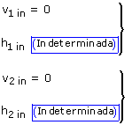
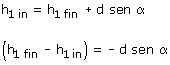
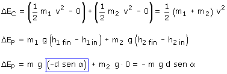
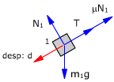
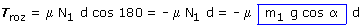
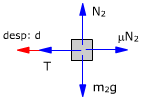
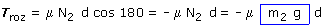
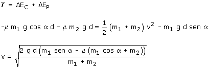

Si el problema no da los datos de la polea se sobreentiende que su masa es despreciable. En este caso no se cuenta con la rotación de la polea y solo se estudia la traslación de los bloques
La polea girará en sentido contrario al de las agujas del reloj
El bloque 1 bajará y el bloque 2 irá hacia la izquierda,
ambos recorrerán el mismo espacio d y adquirirán la misma
velocidad v
Cambios de energía:
 |
 |
 |
 |
|
 |
Cálculo del trabajo (Bloque 1):
 |
TT = T·d· cos 180 = -T·d Tpeso (No se cuenta, está incluido en ΔEP1) TN = N1·d· cos 90 = 0  |
Cálculo del trabajo (Bloque 2):
 |
Tpeso (No se cuenta, está incluido en ΔEP2) TT = T·d· cos 0 = T·d  |
Trabajo total:
T = -T·d - μ·m1·g·d·cos α + T·d - μ·m2·g·d
T = - μ·m1·g·d·cos α - μ·m2·g·d
Aplicando el principio de Conservación:

Si la raíz fuera imaginaria significaría que el sistema no puede estar en la situación final porque el rozamiento se lo impide